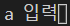
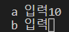
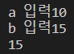

함수
지금까지는 코드를 하나 하나 작성을 했어야 했습니다.
그로 인해 지금까지 반복되는 코드를 짜려면 똑같은 코드를 계속 복사하는 불편한 과정을 거쳐야했죠.
그러나 함수를 사용하면 이런 과정을 거치지 않아도 됩니다.
지금부터 예시를 통해 알아보도록 하죠
>>> if a > b: # 만약 a가 b보다 크면
...
print('a') # 'a'를
출력한다.
...
else: # 그렇지 않으면
...
print('b') # 'b'를
출력한다.
...
이것은 저희가 조건문을 배울 때 사용했던 예시문입니다.
a, b에 정수를 넣고 그에 따라 크기가 큰 수를 나타냈었죠.
그런데 만약 a, b를 여러개 넣고 싶다면?
아니면 a, b를 비교하고 더 큰값을 c와 비교하고 싶다면?
아마 많은 양의 조건문을 써야만 할 것입니다.
함수를 이용하면 금방 해결될텐데 말이죠.
>>>def cal():
이렇게 적음으로써 cal()이라는 새로운 함수를 정의한다고 나타냅니다
이제 함수의 내용을 나타내야겠죠?
>>>def cal():
... if a >
b:
...
print('a')
...
else:
...
print('b')
이제 사용 예시를 들어드리죠
>>>a = int(input('a 입력'))
>>>b = int(input('b 입력'))
... if a >
b:
...
print('a')
...
else:
...
print('b')
>>>cal()
이렇게 하면 어떻게 나오나요?
이렇게 입력창이 나오고
이렇게 b까지 입력을 하면
더 큰 15를 가진 b를 출력해줍니다.
이로써 함수가 잘 작동함을 알 수 있겠죠?
매개변수를 통한 함수를 제작할 수도 있지만 이번 시간에는 여기까지만 배워보도록 하겠습니다.
다음 장에서 봅시다.